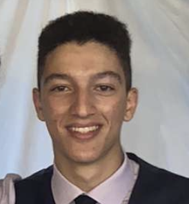

Salim Terzout's Resume
Software Developer/Engineer

About Me
As a computer science student at Western University of Canadian-Algerian heritage, I offer a unique blend of cultures and a global perspective to the tech world. Proficient in Java, Python, C, Unix, Visual Basic and XML. I not only excel in coding but also in forging meaningful connections through my strong social skills. Moreover, I take pride in being accepted into the honours computer science program for my second year, underscoring my dedication and academic achievements. With an enthusiastic attitude for learning and growth, alongside my excellent social skills, I am well-positioned to make a valuable contribution to any software workplace.
Education:
- Western University - Bachelor of Science - BS, Computer Science (Sept 2022 - Apr 2026)
- Activities and societies: Soccer, Dodgeball, Football and Pickleball Club.
- Awards: Western Scholarship of Distinction ($3500 awarded to students with admission average of at least 92%)
- Brantford Collegiate Institute and Vocational School - High School Diploma (2017 - 2021)
- Activities and Clubs: Link Crew, Chess Club,Students Council, DECA, Robotics Team, Soccer, Tennis, Badminton, Pickleball and Track.
- Awards: Honour Roll (95+ Academic Average), 3D Tennis Award
- Skills: Python (Programming Language) · Problem Solving · Java · Mathematics · Teamwork.
Job Experience:
- Full-Time Day Camp Counselor (June 2023 - Aug 2023)
- As a YMCA day camp counselor, my role involved supervising and organizing games to provide children with a safe and enjoyable camp experience.
- Full-Time Sales Associate (Sept 2021 - Aug 2022)
- My responsibilities included selling phones and electronic merchandise to diverse customers while building strong connections to ensure they had an exceptional shopping experience, fostering their loyalty for return visits.
- Part-Time Soccer Coach (Jan 2018 - Oct 2021 )
- As a youth soccer coach, my role entailed instructing children aged 4-13 in soccer fundamentals while prioritizing fun and enjoyment, fostering their love for the game and ensuring a positive experience.
- Part-Time Produce Associate (Apr 2021 - Aug 2021)
- I worked in the back, cleaning and exporting produce to the floor, while also assisting customers regularly in finding products and answering any questions.
Skills
• Teamwork
• Problem Solving
• Mathematics
• French to English/English to French
• OOP
• Data Structures and Algorithms
• Java
• Python
• C
• SQL
• Visual Basic
• Unix
• PowerShell/CMD
• XML
• XSD
• MS Excel
• Databases
Other